CS184/284A Spring 2026 Homework 2 Write-Up
Overview
In the first half of Homework 2, I implemented the core geometry and mesh
operations for Parts 1-4 in student_code.cpp: one-step de
Casteljau subdivision for Bezier curves, separable 1D de Casteljau
evaluation for Bezier patches, area-weighted vertex normals for shading,
and local edge flip on the half-edge mesh.
I then completed Parts 5-6 with edge split (including boundary-edge split extra credit) and Loop subdivision upsampling.
The key challenge was maintaining correct mesh connectivity in Part 4.
Unlike the curve and surface parts where the logic is purely numerical,
edge flip requires consistent updates of next,
twin, vertex, edge, and
face pointers in a local neighborhood while preserving
manifold structure.
Section I: Bezier Curves and Surfaces
Part 1: Bezier curves with 1D de Casteljau subdivision
I implemented BezierCurve::evaluateStep(...) to produce the
next control polygon level from the current one. For each consecutive pair
of points \(P_i, P_{i+1}\), I compute
\((1-t)P_i + tP_{i+1}\) using the current curve parameter
t. If the input level has \(n\) points, the output level has
\(n-1\) points.
Repeatedly pressing E in the GUI visualizes these intermediate
levels until a single point remains; this is exactly the evaluated Bezier
point at parameter t. The implementation is linear in the
number of points for each step.
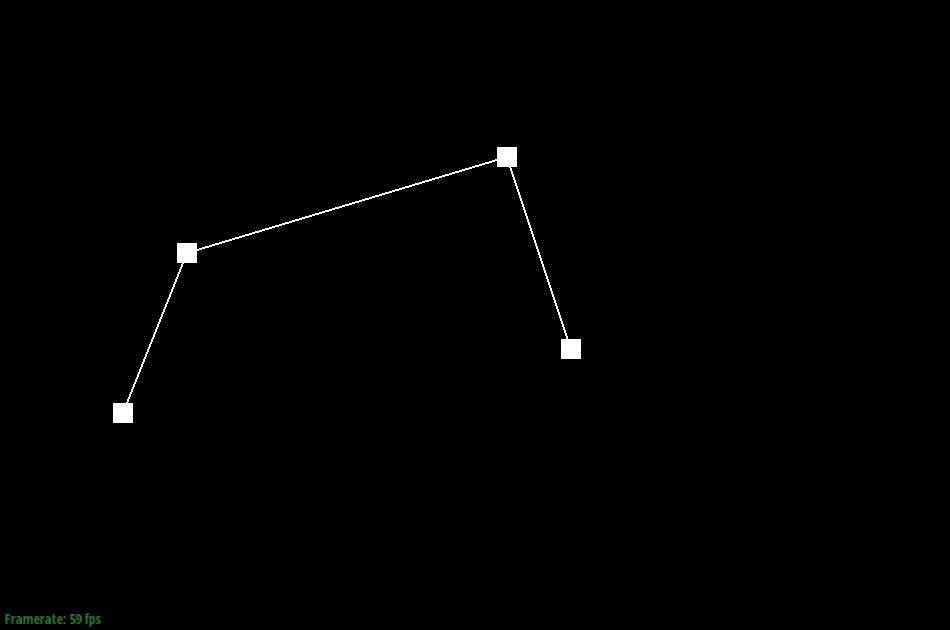
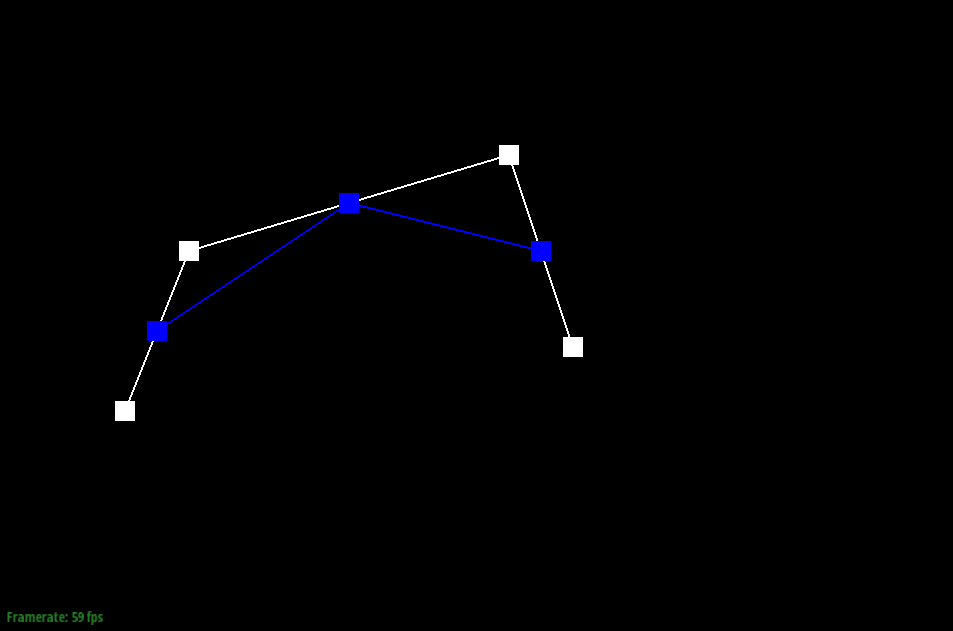
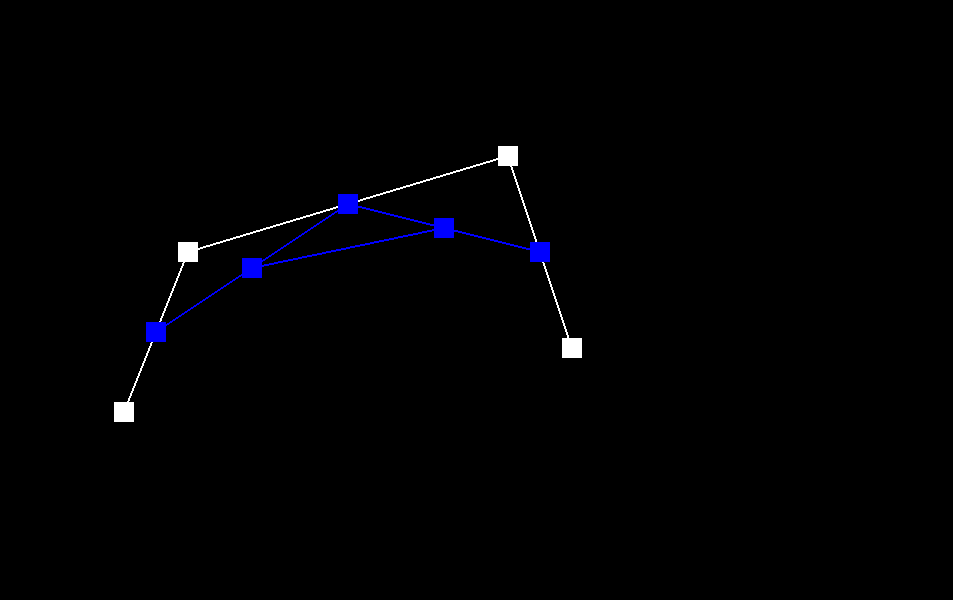
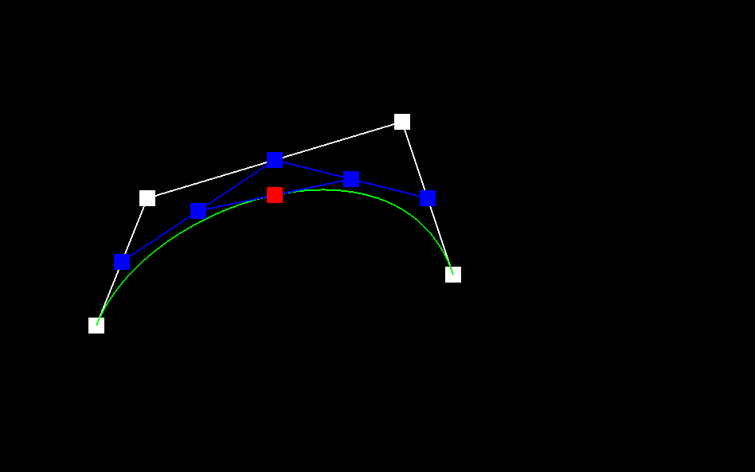
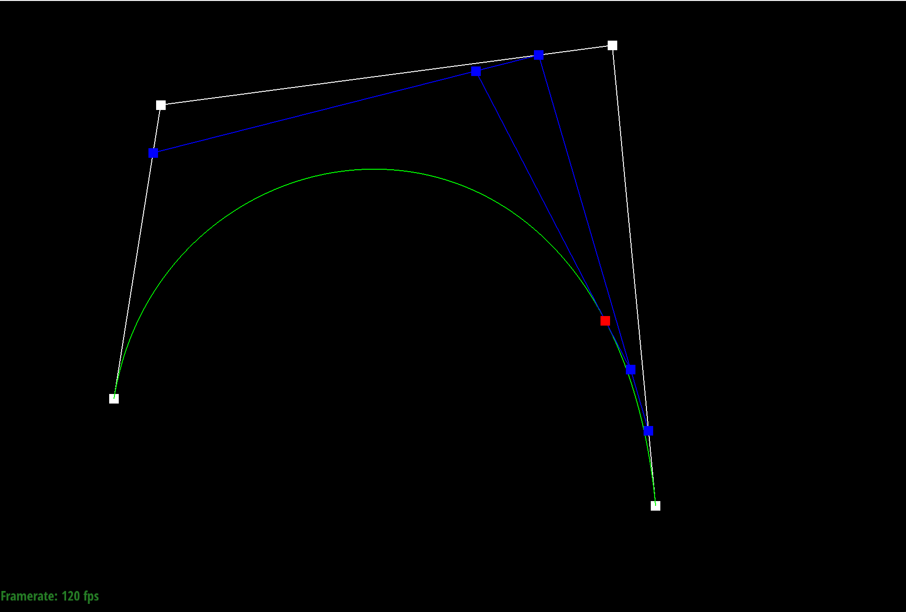
Part 2: Bezier surfaces with separable 1D de Casteljau
I implemented three functions:
BezierPatch::evaluateStep(...),
BezierPatch::evaluate1D(...), and
BezierPatch::evaluate(u, v). The patch evaluation is done by
separable 1D de Casteljau:
- First evaluate each row of 4 control points at parameter
u. - Collect the 4 resulting points into a new 1D control set.
- Evaluate that set at parameter
vto get the final 3D point.
This matches the standard tensor-product Bezier patch construction and produces smooth surfaces for both provided inputs (e.g., teapot and wavy cube).
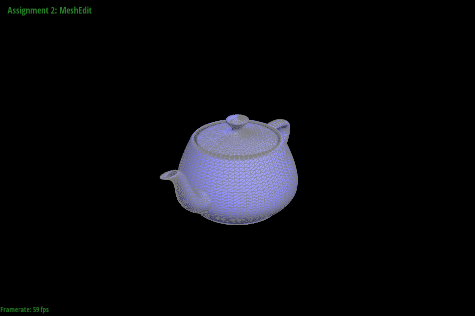
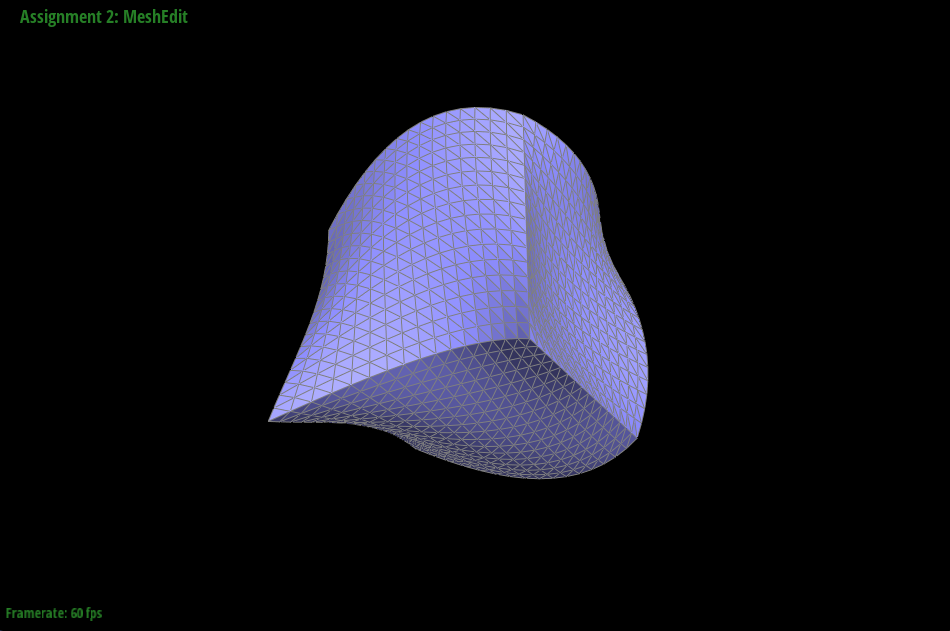
Section II: Triangle Meshes and Half-Edge Data Structure
Part 3: Area-weighted vertex normals
I implemented Vertex::normal() by traversing all incident
halfedges around the current vertex using h = h->twin()->next().
For each non-boundary face, I compute an area-weighted face normal using a
cross product from local triangle edges and accumulate it:
\[
n \mathrel{+}= (p_1 - p_0) \times (p_2 - p_0)
\]
where \(p_0\) is the current vertex position.
The final normal is n.unit(). This gives smooth shading when
pressing Q in the viewer, compared to faceted shading with
per-face normals.
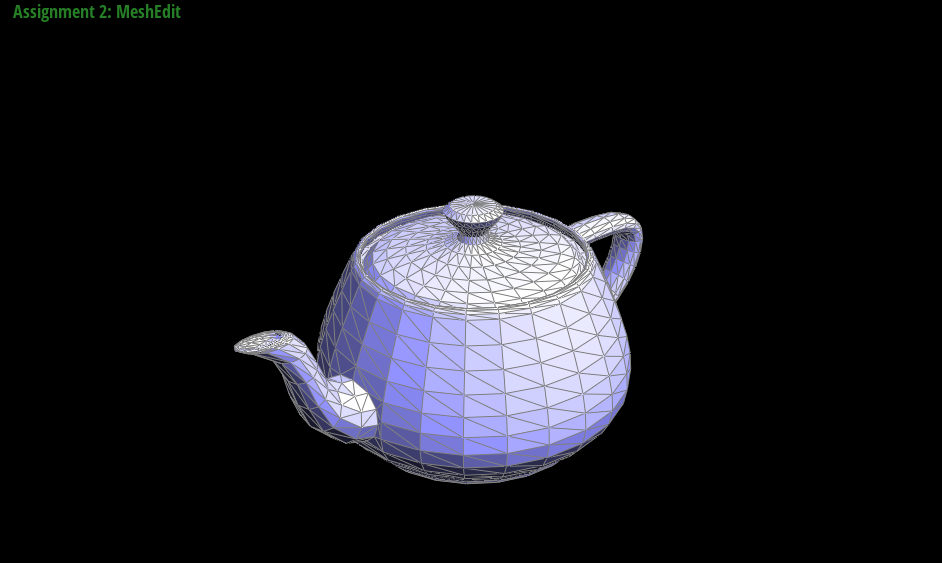
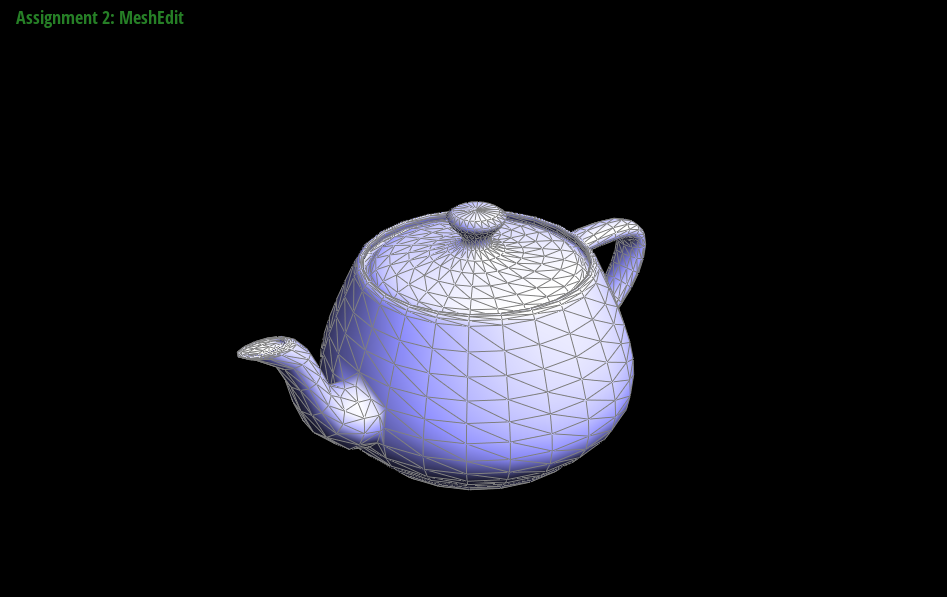
Part 4: Edge flip
I implemented HalfedgeMesh::flipEdge(EdgeIter e0) as a local
connectivity rewrite on the two triangles adjacent to e0. The
implementation first rejects boundary edges, then relinks the six local
halfedges and updates associated vertex/edge/face halfedge pointers.
The operation changes the diagonal of a quad from \((v_0, v_1)\) to \((v_2, v_3)\) without creating or deleting mesh elements, and preserves manifold connectivity when applied to a valid interior edge.
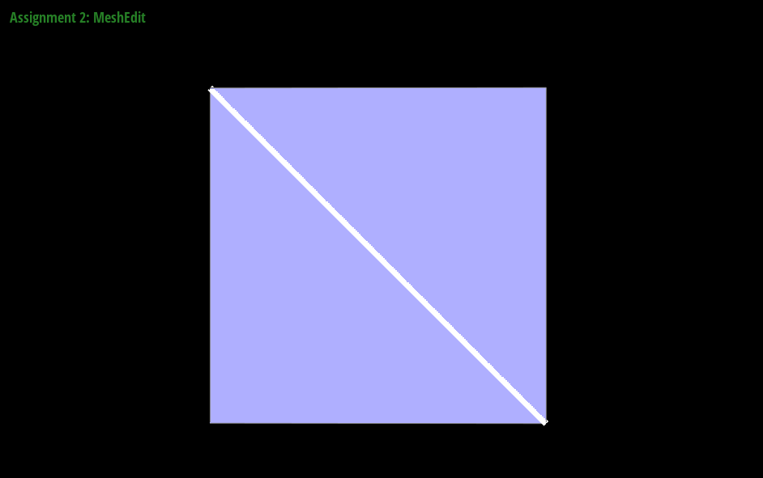
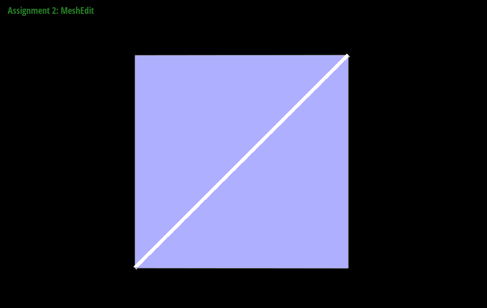
Part 5: Edge split
I implemented
HalfedgeMesh::splitEdge(EdgeIter e0) as a local remeshing
operation on the two triangles adjacent to e0. The routine
first rejects boundary edges, then caches both incident faces and all local
handles (halfedges h0...h5 and their twins, vertices
v0...v3, edges e1...e4, and faces
f0/f1) before any mutation to avoid invalidating traversal.
It allocates one midpoint vertex, three new edges, two new faces, and six
new halfedges. The midpoint position is initialized to
\[
\mathbf{v}_m = \frac{\mathbf{v}_0 + \mathbf{v}_1}{2}.
\]
After allocation, the implementation rewires all 12 involved halfedges with
setNeighbors(...), then reassigns canonical
halfedge() pointers for every touched vertex, edge, and face.
The function returns the midpoint vertex, with
vm->halfedge() set to h3, which lies on the
original split edge as required by the assignment contract.
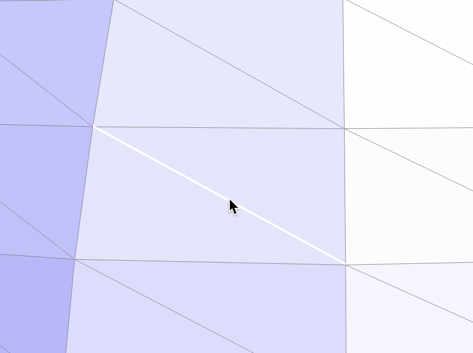
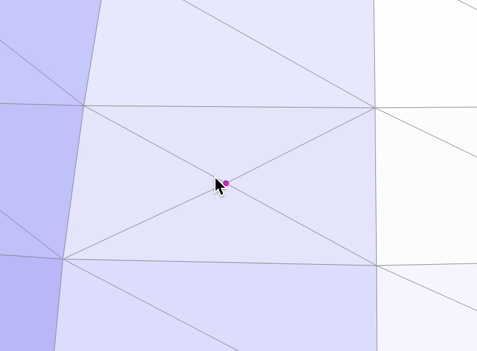
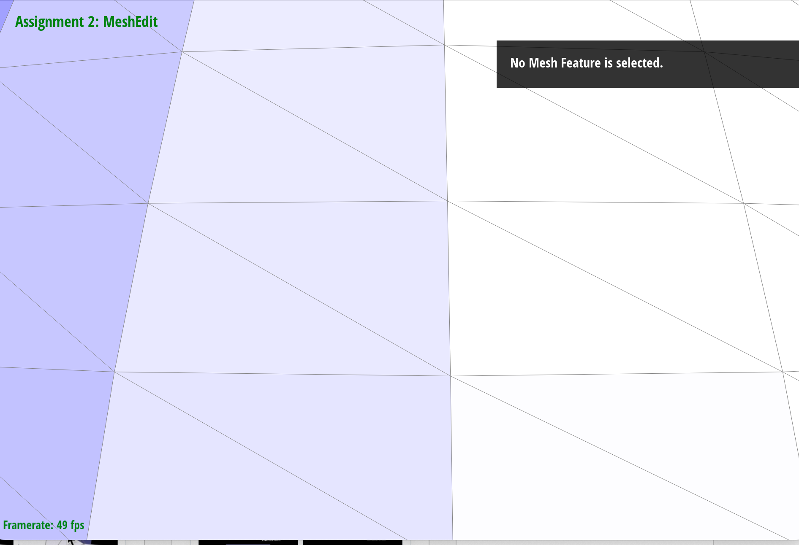
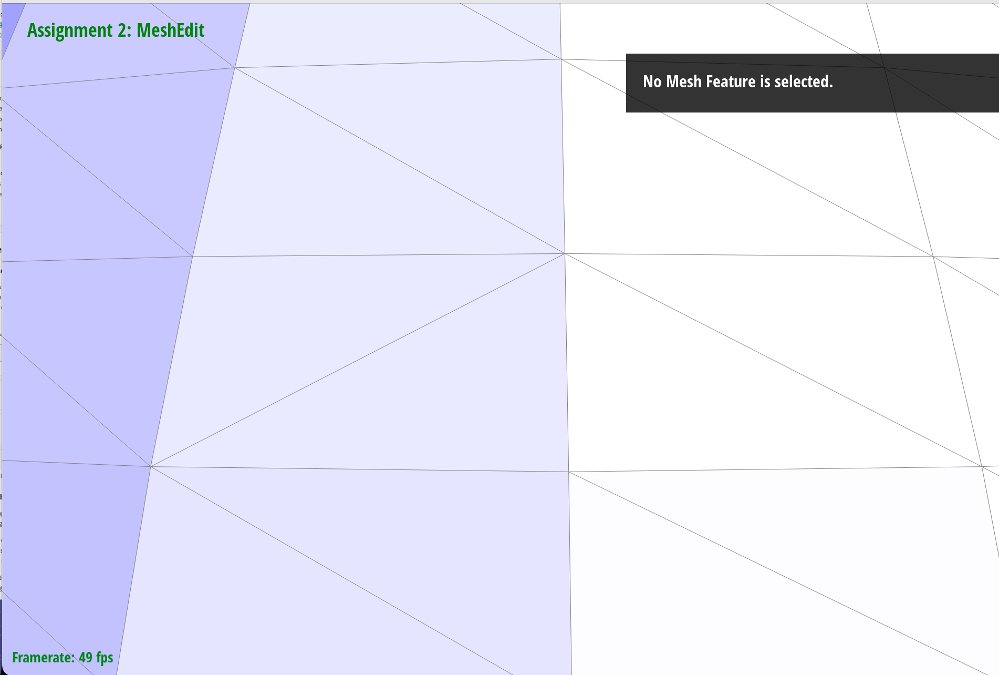
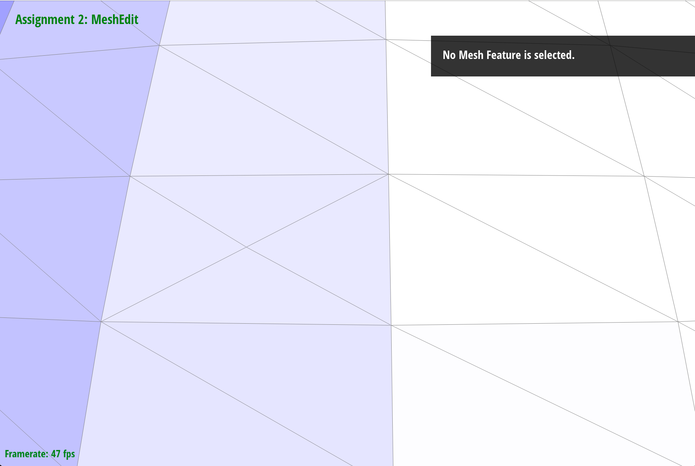
Part 5 Extra Credit: Splitting a boundary edge
For extra credit, I extended
HalfedgeMesh::splitEdge(EdgeIter e0) with an
e0->isBoundary() branch while leaving the existing
interior-edge split path unchanged.
The boundary case first normalizes orientation so h0 is the
interior halfedge and h3 is the boundary halfedge. It then
splits only the non-boundary triangle into two triangles, allocating one
midpoint vertex, one new face, two new edges, and four new halfedges.
To preserve valid boundary connectivity, the virtual boundary loop is also
updated by inserting one new boundary halfedge between
h3Prev and h3.
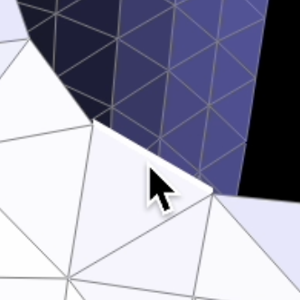
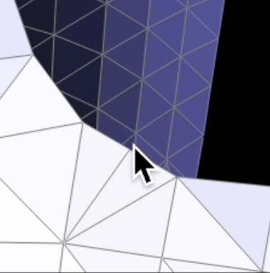
Part 6: Loop subdivision
I implemented MeshResampler::upsample(...) using the standard
Loop-subdivision pipeline. Before any topology edits, I snapshot the
original mesh by copying all original vertices and edges into
oldVertices and oldEdges, and initialize all
isNew flags to false.
Next, I compute Vertex::newPosition for old vertices first.
For interior vertices, I use Loop weights:
\[
\mathbf{v}' = (1 - n u)\mathbf{v} + u\sum_{i=1}^{n}\mathbf{v}_i,
\quad
u =
\begin{cases}
\frac{3}{16}, & n = 3\\
\frac{3}{8n}, & n > 3
\end{cases}
\]
For boundary vertices, I use
\[
\mathbf{v}' = \frac{3}{4}\mathbf{v} + \frac{1}{8}
(\mathbf{v}_{b0} + \mathbf{v}_{b1}),
\]
where \(\mathbf{v}_{b0}, \mathbf{v}_{b1}\) are the two boundary neighbors.
I then compute Edge::newPosition for old edges. For interior
edges with endpoints \(\mathbf{a}, \mathbf{b}\) and opposite vertices
\(\mathbf{c}, \mathbf{d}\), I use
\[
\mathbf{m} = \frac{3}{8}(\mathbf{a} + \mathbf{b}) +
\frac{1}{8}(\mathbf{c} + \mathbf{d}).
\]
For boundary edges, I use the midpoint rule.
Topology updates split only original interior edges from
oldEdges. For each split, I assign the created midpoint
m->newPosition = e->newPosition and mark
m->isNew = true. After splitting, I flip only new cross
edges connecting one old and one new vertex, identified by
va->isNew ^ vb->isNew.
Finally, I commit the subdivision by copying
newPosition -> position for all vertices.


After Loop subdivision, sharp corners and edges become much smoother, especially on the cube. Without pre-processing, subdividing twice also produced a noticeably asymmetrical shape. I reduced this effect by first splitting the middle edge; after two subdivision steps, the result looked more symmetrical. Splitting edges before subdivision adds local degrees of freedom, so the limit surface can better approximate the original features.